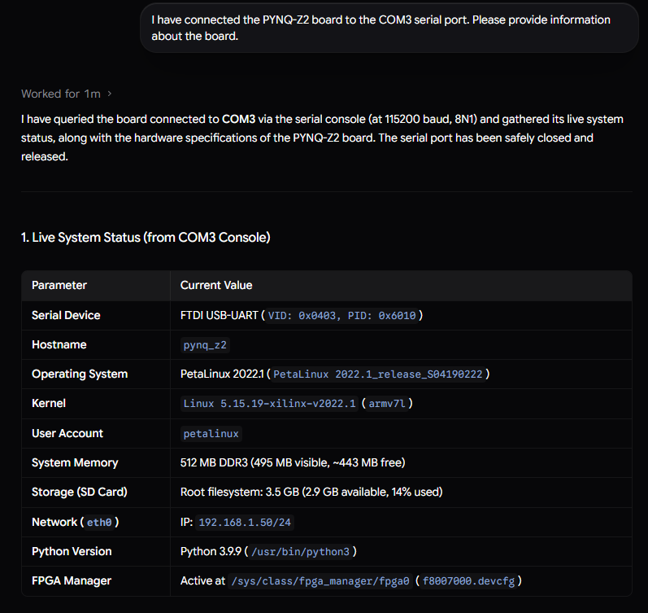
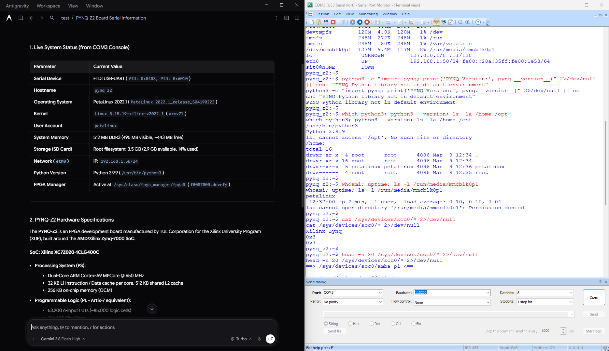
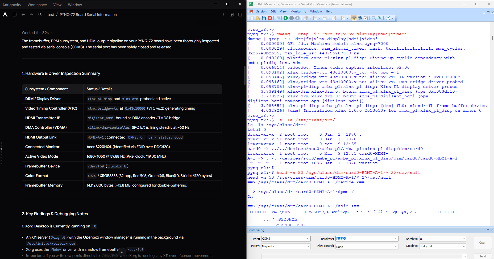
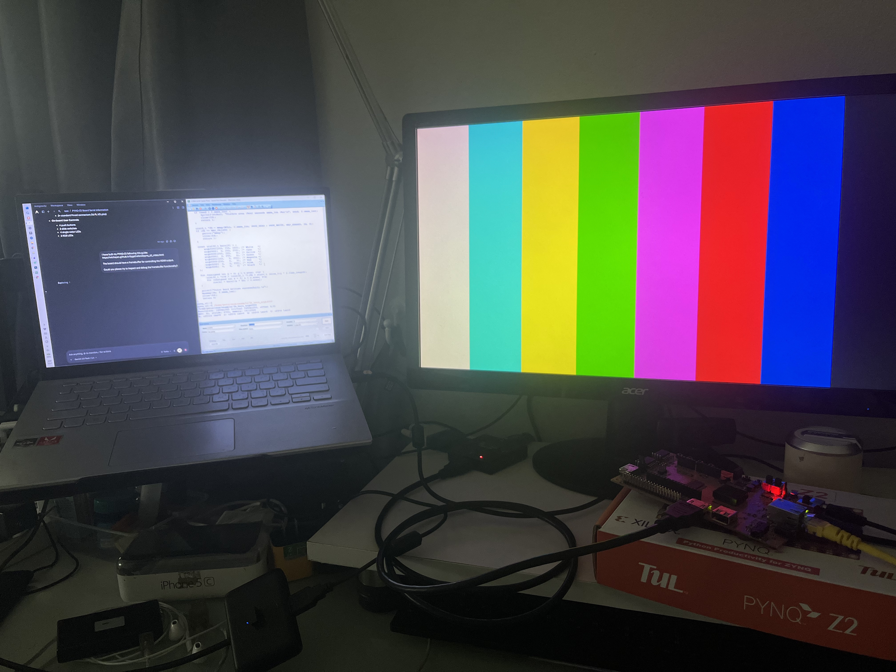
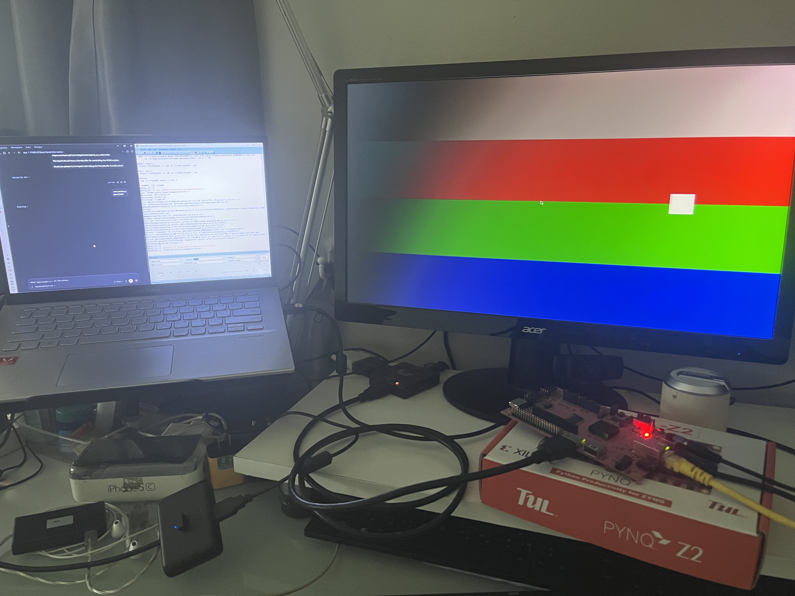
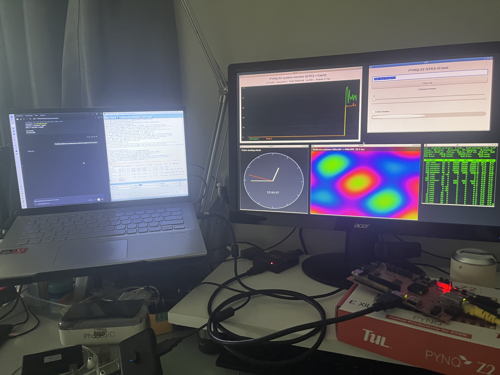
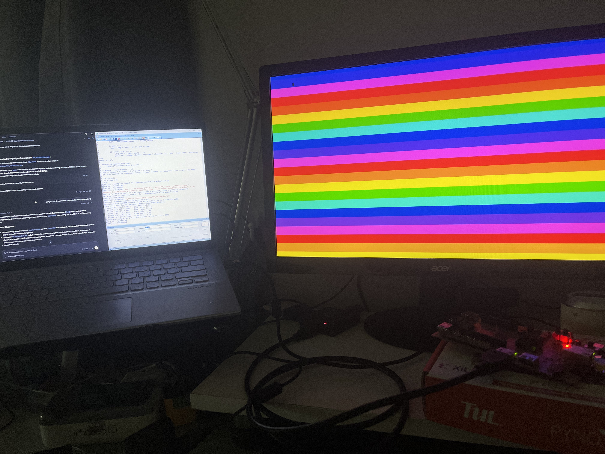
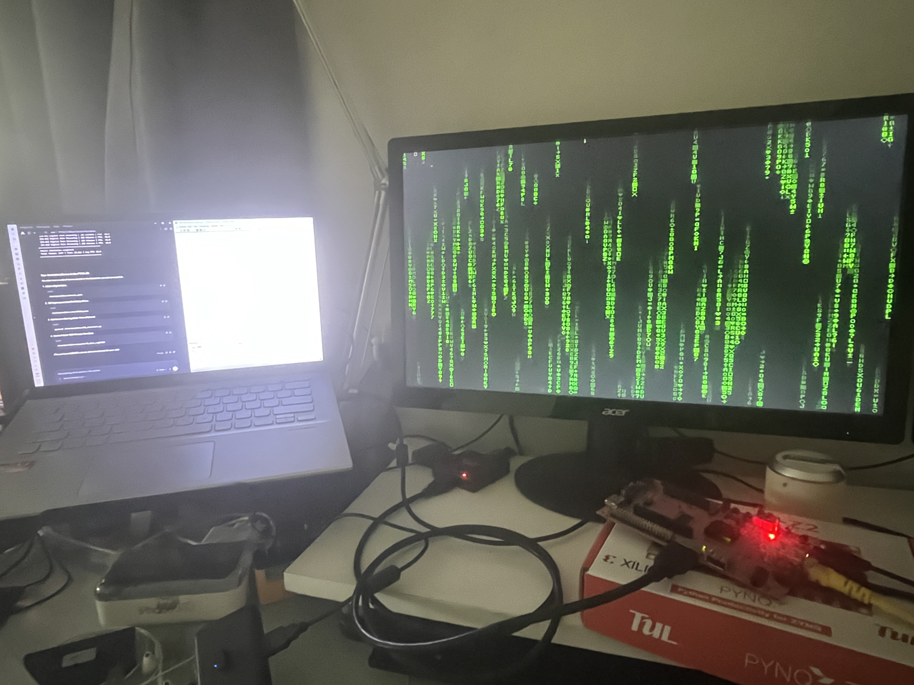
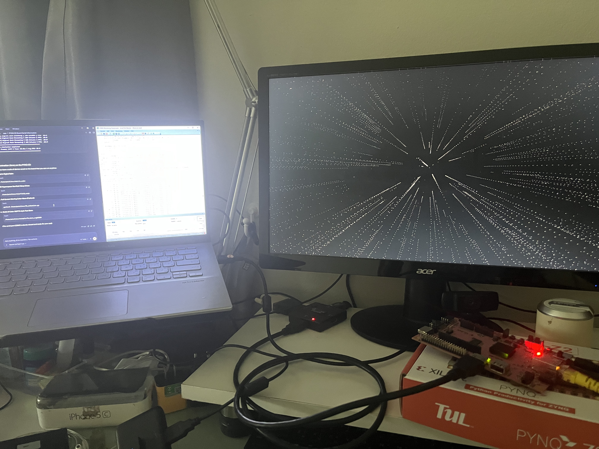
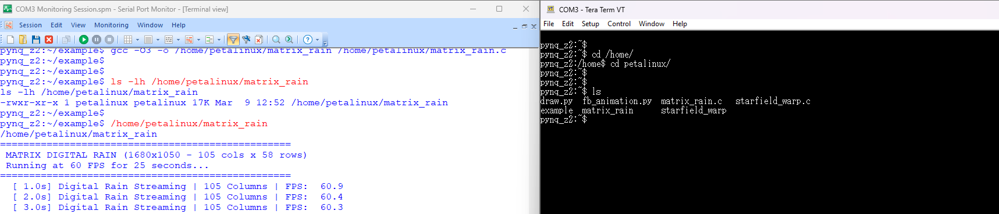

AI Debug with SPM: Peeking Behind the Scenes of AI Agent Hardware Debugging via Serial Port MCP & SPM
1 Overview
Nowadays, many of us use AI as a Coding Assistant to brainstorm code or solve development roadblocks. Especially in embedded hardware development, when encountering a nasty bug, a failed boot, or getting stuck, the first thing most developers do is: Ask AI → Get suggestion → Copy & paste command onto the board. It is a loop everyone is intimately familiar with: The Manual Copy-Paste Loop.
The standard workflow usually looks something like this:
- Hit a bug on the board or an unexpected boot crash → open browser and ask an LLM (ChatGPT, Claude, or Gemini).
- Once the AI spits out a shell command or script → click Copy.
- Switch windows to your serial terminal emulator (Tera Term or PuTTY) → Paste and execute.
- When the board barfs out a verbose log or a wall of red error messages → highlight and copy the terminal output.
- Switch back to the AI chat → paste the output and ask for the next step... AI responds: "Ah, try running this command instead" or "Try patching this file."
- Copy, paste, run, copy, paste, run... repeat indefinitely.
The overall system topology looks like this:
graph LR
AI["AI Chat (ChatGPT / Claude / Gemini)"]
User["User (Manual Copy-Paster)"]
subgraph PC ["Host Computer"]
TeraTerm["Tera Term"]
COM3["COM3 Port"]
end
Board["PYNQ-Z2 Board"]
User <--> |Prompt & Answers| AI
User <--> |Copy & Paste| TeraTerm
TeraTerm <--> COM3
COM3 <--> Board
If the AI's first suggestion immediately resolved the issue on the first try, life would be grand. But in the reality of embedded hardware, testing one fix frequently leads to a new error or breaks an adjacent component, resulting in the dreaded, repetitive Copy-Paste Loop:
sequenceDiagram
actor User as User (Human Router)
participant AI as AI Chat
participant Terminal as Tera Term (COM3)
participant Board as PYNQ-Z2 Board
loop The Repetitive Copy-Paste Loop
User->>AI: 1. Send query / encountered error
AI-->>User: 2. Suggest Linux commands to try
User->>Terminal: 3. Switch window, copy & paste command, execute
Terminal->>Board: 4. Send command over Serial
Board-->>Terminal: 5. Board outputs log / error stream
Terminal-->>User: 6. Terminal displays verbose output
User->>AI: 7. Highlight output, copy & paste back to AI
end
Notice that in this workflow, our primary activity isn't actual hardware engineering or debugging—we are simply acting as a "Human Router" shuffling text back and forth between window buffers, waiting for the AI to analyze it. That led to an obvious realization:
2 Serial Port MCP
Recently, open-source Model Context Protocol (MCP) servers for serial port communication have emerged. An idea instantly sparked:
"Why tire ourselves out acting as a human copy-paste conduit when we can equip the AI Agent with tools to open serial ports and interact directly with the board's console?"
Instead of relying on a human intermediary, the architecture shifts to an autonomous setup:
We connect an AI Agent (in this experiment, Antigravity) to a Serial Port MCP server. The agent is granted tools to open, configure, send commands, and read output directly over port COM3 connected to the PYNQ-Z2 board.
graph LR
User["User (High-level Prompter)"] -- "Single Goal Prompt" --> Agent["AI Agent (Antigravity)"]
subgraph PC ["Host Computer"]
Agent -- "Send Command / Read Output" --> MCP["Serial Port MCP"]
MCP --> COM3["COM3 Port"]
end
COM3 <--> Board["PYNQ-Z2 Board"]
Our workload is drastically reduced. We transition to a high-level supervisory role, providing a single concise goal prompt such as:
I have connected the PYNQ-Z2 board to the COM3 serial port. Please provide information about the board.
The result? The AI agent autonomously opens the COM port, explores the system, executes discovery commands, parses the returns, and presents a beautifully formatted system overview directly in the chat window:

3 Serial Port Monitor
However, when the AI agent delivers such a clean, polished summary, an instinctive question immediately hits every seasoned hardware engineer:
"What did the AI actually do under the hood to gather that information?"
In conversational UIs, the AI typically digests raw outputs and returns only formatted conclusions. We cannot see what low-level Linux commands it executed, what scripts it generated, or which system files it modified. While we could ask the AI to explain its actions, that still lacks real-time, ground-truth visibility into the actual byte-level traffic.
Therefore, we need a dedicated tool to sniff and monitor the serial port in real time, character by character.
3.1 Serial Port Monitor (SPM)
Several serial sniffers exist for Windows, but one of the cleanest and most reliable tools for non-intrusively tapping active COM ports is Serial Port Monitor (SPM) (available at: https://www.com-port-monitoring.com/).
The updated conceptual model looks like this: we interact with the AI agent as before, but SPM acts as an out-of-band wiretap sniffing the bidirectional traffic in real time:
graph LR
User["User (High-level Prompter)"] -- "Single Goal Prompt" --> Agent["AI Agent (Antigravity)"]
subgraph PC ["Host Computer"]
Agent -- "Send Command / Read Output" --> MCP["Serial Port MCP"]
MCP --> COM3["COM3 Port"]
COM3 -. "Sniff Data Real-time" .-> SPM["Serial Port Monitor (SPM)"]
end
COM3 <--> Board["PYNQ-Z2 Board"]
SPM -. "Display Full Traffic Logs" .-> User
3.2 Putting It to the Test: Real-World Experiments
Let's look at actual test runs to see the power of combining an autonomous AI agent with real-time serial sniffing.
3.2.1 Experiment 1: System Discovery
When sending the initial reconnaissance prompt:
I have connected the PYNQ-Z2 board to the COM3 serial port. Please provide information about the board.
Glancing over at the Serial Port Monitor window while the AI agent is thinking, every raw command dispatched to the board appears live on screen:

Red text represents outgoing characters and commands sent by the AI Agent; Blue text represents incoming response streams from the PYNQ-Z2 board.
The AI's disciplined, step-by-step diagnostic workflow is immediately visible:
- Checking whether the PYNQ Python library is installed:
python3 -c "import pynq..." - Inspecting Python runtime version and filesystem layout:
which python3; python3 --version; ls -la /home /opt - Verifying active user privileges, uptime, and SD card mount points:
whoami; uptime; ls -l /run/media/mmcblk0p1 - Probing Xilinx Zynq SoC silicon identifiers in sysfs:
cat /sys/devices/soc0/* 2>/dev/null
Once it gathers all requisite parameters, it compiles them into a structured table and replies to the chat interface.
3.2.2 Experiment 2: The Real Test—Debugging Custom Hardware
Next, let's test a significantly more challenging scenario based on our previous article on building an HDMI display controller pipeline on PYNQ-Z2:
(https://wichayen.github.io/fpgathailand/pynq_z2_video.html)
I submitted the following debugging task to the AI agent:
I have built my PYNQ-Z2 following this guide:
https://wichayen.github.io/fpgathailand/pynq_z2_video.html
The board should have a framebuffer for controlling the HDMI output.
Could you please try to inspect and debug the framebuffer functionality?
The AI agent immediately began its diagnosis. Because SPM was running simultaneously, we could track its exact forensic strategy behind the scenes:

And here is the physical proof on the connected HDMI monitor—a clean colorbar test pattern rendered on screen:


When challenged to create demo applications to test high-speed dynamic rendering on the HDMI display, the AI delivered impressive interactive programs:




Live HDMI Output Video Demos:
Starfield Warp 3D Perspective (Written in C and compiled with GCC on PYNQ-Z2)
Matrix Digital Rain at 60 FPS (Custom 8x8 bitmap font written directly to /dev/fb0)
Crucially, having SPM gave us exact knowledge of which files were created and where they were stored.
Once an AI finishes a task, a common frustration is: "Where did the agent save those scripts and binaries?"
Without a sniffer, one must query the AI again. But with SPM continuously capturing the session, we saw that everything was organized under /home/petalinux/.
As soon as the AI released the serial port, we re-attached Tera Term to inspect the source code, run manual benchmarks, and extend the generated C codebase directly:

/home/petalinux/ via Tera TermWhile an AI can summarize generated file locations upon request, watching the actual compile commands, flags, and file paths scroll by live in SPM provides complete transparency and ensures zero hidden side effects.
4 Key Takeaways
Pairing an AI Agent with a Serial Port MCP and sniffing traffic with SPM has proven to be a game-changer for embedded engineering:
1. A Force Multiplier for Unfamiliar Domains
Hardware and FPGA engineers aren't always fluent in every esoteric Linux kernel interface or sysfs entry. Remembering exact driver debugging commands or sysfs node paths can be tedious. Having an AI agent navigate the system, script tests, and automate verification accelerates iteration cycles dramatically.
2. The Ultimate Rule: "Observe the AI's Solutions and Make the Knowledge Your Own"
Directing AI to solve problems is no longer novel. The real danger is: if we treat the AI as a black box and ignore how it achieved the result, our own engineering skills will stagnate.
By keeping SPM open and studying how the agent formulates hypotheses, queries hardware registers, and tracks bugs, you effectively have a Senior Embedded Engineer pairing with you live. Tasks get resolved faster, and you continually add powerful diagnostic techniques to your engineering repertoire.
5 Deep-Dive: 3 Lessons from Raw Log Analysis
I took the raw communication log captured by Serial Port Monitor and prompted an AI to evaluate the session and identify the three most technically compelling behaviors. Here is the breakdown:
5.1 Hardware Validation at the Interrupt Level: Verifying Live VDMA Streaming
Instead of naively assuming the video pipeline was operational simply because /dev/fb0 existed, the agent executed this command:
grep xilinx-dma /proc/interrupts; sleep 1; grep xilinx-dma /proc/interruptsIt sampled interrupt #57 for the xilinx-dma-controller (the AXI VDMA IP core in the FPGA responsible for pushing pixel buffers to the HDMI physical layer) exactly one second apart!
Observing the interrupt count jump from 17583 to 17644 (~61 ticks/second), the agent conclusively confirmed that the VDMA hardware was actively streaming frames at 60 Hz. That is textbook embedded systems verification.
5.2 Instant Autonomous Self-Correction: Zero Human Handholding
The AI originally planned to write a Python script using numpy.memmap to stream color bars into the framebuffer. The board promptly responded:
ModuleNotFoundError: No module named 'numpy'Rather than halting or asking the user to install packages, the agent immediately pivoted on the next command. It wrote a self-contained Python script utilizing built-in standard modules os and mmap, generated an 8-color byte array (White, Yellow, Cyan, Green, Magenta, Red, Blue, Black), and wrote directly to /dev/fb0, rendering the test bars on the monitor seconds later.
5.3 Recognizing Bottlenecks: Transitioning from Python to C + GCC for 60.0 FPS
When asked to create smooth fullscreen animations, the AI first attempted a Python implementation (fb_animation.py). Rendering dynamic color waves across the 1680x1050 viewport yielded approximately ~19 FPS.
Recognizing the CPU bottleneck, it checked gcc --version, discovered GCC 11.2.0 was present on the target, and immediately wrote two optimized C applications:
starfield_warp.c: 3D perspective projection space warp calculating 1,200 star coordinates in real time.matrix_rain.c: Digital rain glyph stream utilizing a custom hardcoded 8x8 bitmap font.
It compiled the code directly on the target with optimization flags:
gcc -O3 -o /home/petalinux/matrix_rain /home/petalinux/matrix_rain.cThe resulting C binaries sustained a rock-solid 60.0 FPS refresh rate on the HDMI monitor.
(Additionally, when detecting minor frame flickering, the agent accurately identified that the background Xorg server was competing for the display buffer and proactively issued echo 0000 | sudo -S /etc/init.d/xserver-nodm stop to prevent contention.)